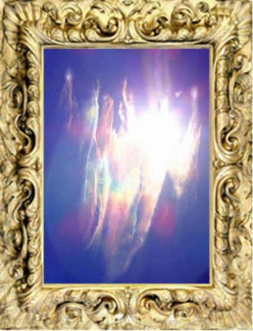

| DIVINELIGHT: 地球を護る聖なるグループ | |
| 宮澤利英 | |
| DIVINELIGHT (2019) | |
本書に収録されている画像は
すべて写真です。
1. アトランティスの叡智
"次元上昇は喜びと共に起こります"
恐れから選択する人と、本当の気持ちから選択する人がいます
次元上昇は本当の気持ちから選択した時に起こります
魂は喜びで出来ています
ワクワク事している時、それは魂からの選択です
でもソウルグループのメンバーが出逢うとパーティー三昧になってしまったり
それも時には大切です。でも魂の喜びは飲んで騒ぐ事とは違います
魂の仕事は本来の自分自身を表現することそれが本業です
本当の自分になるには本当の自分を見せる必要があります
本心を話す事 どの瞬間も考えと気持ち行動が繋がっていると
ヒーリングが同時に起こりビジョンは即座に現実化されていきます
本当の自分は宇宙と調和する
宇宙と調和して本当に自分だけのものになって自分自身になって行くと
シンクロは起こり宇宙が必要な事一式を送ってくる
自分を100%愛せるようになると承認を外から求めなくなり
自分に色々なものを与えていき、自分が満たされていきます
自分を満たしていくとバランスはとれて最高の自分に繋がっていきます
変化は喜びと共に起こります 喜びは高い周波数 そして高次元
深刻さは低いエネルギー 低くなると願い事を現実化する力が重く遅くなります
フォーカスは自分、すべての領域のバランスを取って行きましょう
2. アニマルスピリット
人間は物理的な身体、先祖代々続く人間の肉体意識であるスピリット、永遠なる魂、
この３つで出来ています
第一次存在と言われる魂存在は完全で完璧で全体なので覚醒していて
進化する必要はありません
進化する人間のスピリットは藻から始まり、色々なものに転生し、動物になり、
やっと人間になれて何万回も転生します。
そして魂とスピリットが契約を結び、同じスピリットと同じ魂が共に7回転生して、
その過程を経て、１度アセンションすると天使、2度アセンションすると最終形体である
菩薩、アセンデッドマスターになると言われています
また魂の転生回数は３００～５００回前後、その倍の人も、たった１回の人もいます
しかし人間になる前のスピリットも天使存在になれます
例えば動物のスピリットが猫に転生し、その種を完全に克服したら、そのまま猫の存在から自分の肉体を純粋なエネルギーへとアセンションして天使存在にもなれるのです。
そして輪廻の輪から離脱したこの写真に写っているような存在たちがいます
横に見ると猫がスーパーダッシュしているように見え、縦にすると人間にも見えます
又ネイティブアメリカンの伝統のパワーアニマルとは、あなたの肉体意識のスピリットが
人間になる前に最後に経験した動物の事を示します。
人間のスピリットがこの天使次元に達するには、自主独立していなければなりません
全ての意識は平等です。優れているも劣っているも大きいも小さいもありません
あなたがジャッジから自由で葛藤が一切なくそして純粋無垢な人であれば天使次元の存在に指令する事も出来ます
3. 聖なる結婚
男性みたいな女性もいれば
女性みたいな男性もいます
体が女性でも魂が男性性だったら
パワフルに感じるでしょう
体が男性でも魂が女性なら
穏やかさを感じるでしょう
でも進化する肉体のスピリットが男性性 女性性のバランスが取れて
統合された人からは偏ったエネルギーは感じない
地球生まれの魂は、ジェンダーは感じない
そしてニューエイジ水瓶座の時代は
男女共 魂の中の女性性 女神性を発揮する
統合ユニティーの時代と言われています
4. コンシャススリープ

意識が拡大して行くとほとんど寝てる間無意識になれなくなってきます
内なる葛藤が無くなってくると完全に意識的な睡眠になってきて
友達と話していたり。。。
故人にあったり。。。
過去に行ったり。。。
未来に行ったり。。。
教わっていたり。。。
ガイドと一緒に過去世の自分を見に行ったり。。。
それに、幽体離脱したりも出来るようになる
ある日身体が眠っている時にもう無意識になれなくなってきて
そして色々な活動をする事になる時が来る
コントロールさえできる、これを意識的眠りコンシャススリープと言います
幽体離脱は意識的に離脱するなら魂と肉体のスピリットが一緒です
肉体のスピリットが一緒にいかないと夢になります
5. エレメンタル ウィンディーネ
自然霊は通常特定の場所キリスト教以外の寺院、神殿、洞窟、小規模な水域、
河川、植物山等に付属しており
2種類以上のエーテル植物が構成する複合存在で色々な形や気質を持って現れます
エレメンタルとは自然のあらゆるものの生命力の要素であり
自然霊の一種であり、地球のスピリットに不可欠な要素
自然霊に統治され基本的に好意的な存在です
エレメンタルを4つの元素に従って分類すると
土のエレメンタルはノーム〈gnome〉
空気のエレメンタルはシルフ〈Sylph〉
水のエレメンタルはウィンディーネ〈Undine〉
火のエレメンタルはサラマンダー〈Salamander〉
非物質であるエレメンタル生命体が生まれるのは植物のスピリットが進化して
物質に転生する必要がなくなった時です、通常これによって種は絶滅します
体を持たない植物エーテル意識には階層構造があります
ガーディアンスピリット、自然霊とエレメンタル、下位エレメンタルの順になっています
スピリチュアルな神秘的な面で目覚めを果たした人以外普通の人間には見えない存在です
また人間とエレメンタルの接触は人間がすべての葛藤を手放していない限り稀な事です
エレメンタルは私たち人類がこの惑星に生まれる前に輪廻の輪から抜けました
彼らエレメンタルの役割は私たちが口にする全ての言葉に形をもたらす事です
6. ガーディアンスピリット
パン〈Pan〉と言う隣のパラレル領域にはアセンションした植物のスピリットから
生まれたあらゆる生命体が存在します
動物と同じように植物のスピリットもアセンドする事が可能です
動物と同じ方法で植物が自身のスピリットをエルフの領域へとアセンドさせるのです
ガーディアンスピリット、非物質生命体は、地球のスピリットと
下位領域に属する形態を結ぶ橋です
天使存在とよく似たもので天使存在と同様、大天使がそれらを統治しています
ガーデイアンスピリットは人間に転生している魂のガイド役を行う事が出来ます
ガーデイアンスピリットは７つの領域すべてを自由に探検する事が許されています
７つの領域とは、
キリスト, セレスチャル, メンタル, コーザル, アストラル, エーテル, 物理次元の事です
こちらの写真はアマゾン川のガーディアン
水の精霊のようであり、ピラニアのような姿ですが、
"光の道であり魂の道を歩む者よ、地球上全てにいるガーディアンたちがあなたを導く"
そう言っていました
7. 智天使
愛のさまざまなレベルについて
愛には様々な十段階のレベルがあります
体現してそれぞれの愛のレベルに到達します
本能的な愛、奪う愛、愛する愛、許す愛、育む愛、与える愛、叡智としての愛
限りない自己表現としての愛、存在としての愛、そして創造主としての愛
愛とは創造における意志であり意識を形作っているもの
愛とは私たちの存在の活動そのもの
そして最後の定義は精霊を慰めるものとしての愛
また存在としての愛を越える愛についてはほとんど知られていません
この地球次元には沢山の知恵を持った教師たちがいます
準備が整えば師はあなたの前に現れる事でしょう
ソロモン王は叡智としての愛を
モーセは創造主そのものとしての愛を
イエスキリストは許す愛と存在としての愛
釈迦は存在としての愛と創造主そのものとしての愛を
観音は育む愛と存在としての愛を
孔子は叡智としての愛を
モハメッドは創造主としての愛を
世界至る所にこれらのレベルの愛まで到達した存在たちが沢山います
正確に言えば14万4000人のアバターが存在します
8. オーバーソウル
第一存在と呼ばれる魂が、地球の人間の形態の中に初めて転生する時に
必ず良く似たもう一つの魂と結合して,入り口であるロゴスを通り地球次元に入ってきます
その２つの魂の結合によってキリストボディが目覚め、キリスト意識が生じ、
それがオーバーソウルと言われるものです
これがないと時間空間を体験出来ません
そして物質次元で迷ってしまわないようにもう一つの魂"ツインフレーム"が必要なのです
オーバーソウルは結合した魂とそれぞれの一連の転生を通して、
地球上における多くの機会を完全に体験し、観察する事が出来るように
それぞれの転生を決定します
オーバーソウルは全ての転生を同時に時間と空間に制限された枠組みの外側で体験します
オーバーソウルとはそれぞれの先祖代々続く私たち肉体のスピリットの転生に
インスピレーションと導きをもたらす源です
9. ツインフレイム
地球生まれでない魂が地球のシステムに入ってくる時は、必ずよく似たもう一つの魂と
地球を取り囲む１２のロゴスのひとつを通り地球の次元に入ってきます
ロゴスは地球を創った存在ではなく、
地球に魂が入ってこられるようにエネルギーネットワークを創った存在です
地球で肉体に入るために、結合した魂をツインフレイムと呼びます
ツインフレイムはソウルメイトとは違います
そしてこの結合した二つの魂をオーバーソウルと呼び片割れをツインフレイムと呼びます
地球にいる間は最初から最後までツインフレイムは同じです
ツインフレイムとは前にいた他の惑星のシステムから
地球というシステムにソウルグループと共にやってきた良く似たハーモニクスを持つ
二つの魂で地球での結合を誓い合った特別な相手、魂のパートナーです
ツインフレイムは
片方が肉体に転生して、もう片方は全く肉体に転生しない場合もあります
全ての転生をツインと共に転生する魂のペアもいます
片方は一度だけ転生して、もう片方は何度も転生する、そういう魂のペアもいます
ツインの片割れの魂が転生していない場合は、高次元からもう一つの転生している魂を導きます、片割れが転生していない場合子供の頃から霊的な事に興味を持ちます
ツインフレイムはあまりにも自分そっくりなので葛藤をリリースする前に出会うと
自分の葛藤を相手を通して見る事になります
最悪の場合、殺し合いに発展するケースもあると言われています
ツインフレイムは男女だったり兄弟や姉妹、同性の場合もあります
もし葛藤をすべて手放して出会えたら地球上で出逢う最愛の相手
最高のパートナー魂の伴侶です
10. カルト メタトロン
本来はある特定の理念や信念を集合的な意識に伝えるために
組織化したすべてのグループの事であり、すべてのカルトは宗教として始まりました
今では知識の排他性とその組織の唯一の重要性を普及するものとして
残在しています
カルトとは組織化された全てのグループの事であり
特に宗教あるいは霊的な事に基礎を置く共同体の事を指しています
現在カルトと呼ばれるそれらの組織はグループの中で
"個人に名誉を与えず"その代わりに数を通して力を得ようとします
周りの人々や権威的な人の意見により "自分はだれか？"
と言う認識は失われてしまい家族、友達、宗教、社会、仲間、部族、会社
と言う集合体が私たちと言う存在を形作っています
他者の影響から抜け出して、私の中に内在する天才性、自分のユニークな本質を
取り出すにつれて、自分がいかに真の道から遠くに離れてしまったのか気づきます
大多数の人は目覚めた意識を持って生まれていないため、
人生地上での体験を導くガイドとして
"世間に認められた人々" の言いなりになってしまいます
そしてパワーを明け渡してしまうのです
カルトのリーダーたちは、どんなに善い行いを見せていてもそれは "マスク"
全てはビジネスなのです
真の指導者は自分の能力を超える事を許可のできる人です
11. エンライトメント 覚醒
覚醒とはすべての幻想から自由になった状態です
肉体の中にいながら完全に目覚め恩寵と調和に満ちた魂意識から瞬間瞬間を生きて行く事
覚醒すると感覚を通して入ってくる情報は無限です
世界の姿をエネルギーと意識も含めてありのままに見る事が出来ます
人間を支配している集合的な思考フィールドの制限をもう受ける事はありません
本質的な自己を通して創造します
私だけのユニークな才能が生み出す思考を
地球のエーテルのエネルギーを使って現実化します
時間と空間は流動的になり自分の全ての転生を自分で知る事が出来ます
そして高次元の存在たちも視えるようになります
正し覚醒している人でも全てがわかるわけではありません
12. 光明

光明とは覚醒後、生の全てが明らかになり、あらゆる現実のレベルにおいて、
意識的に生きる事が出来る状態です
全ての生命の源とあなたは完全に一つであり、
自分と他の生きとし生けるもののすべての存在との違いを一切認識する事は出来ません
この次元に喜びを放射する魂存在として他の人々の資源となります
そしてあなたが出会うすべての人がそれぞれの旅の完成に向けて
大いなる自己を取り戻す事が出来るように手助けをします
光明が起きるのは、地球最後の転生です